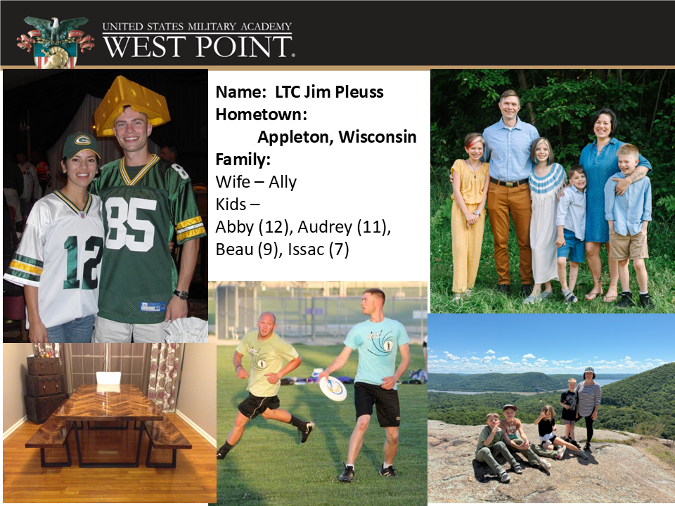
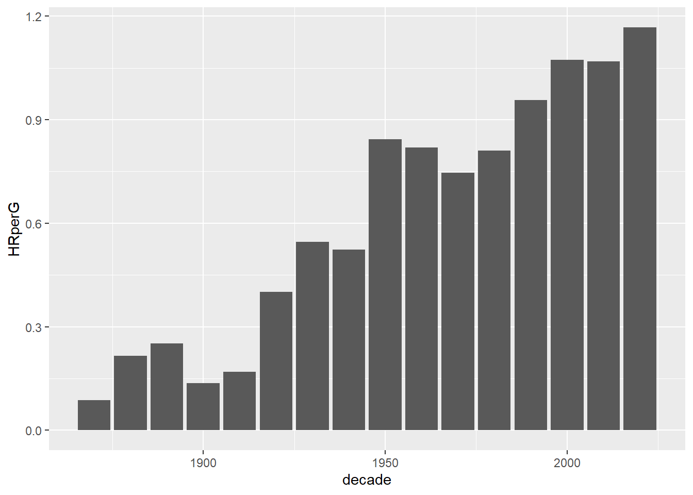
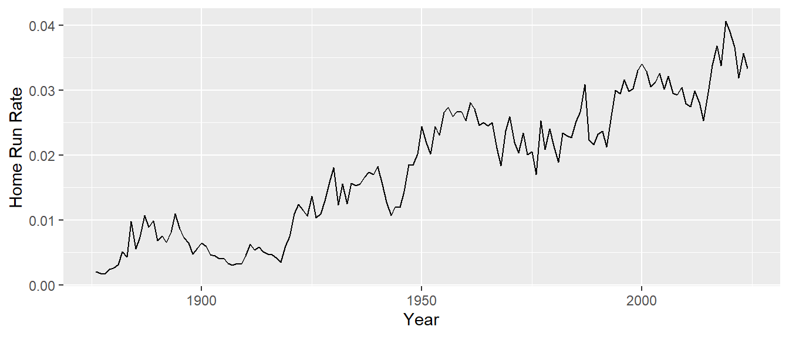

MA388 Sabermetrics: Lesson 1
Course Introduction
Contact Information
LTC Jim Pleuss
james.pleuss@westpoint.edu
Thayer Hall Room 233
845-938-7675
PACE: email, Teams, drop-in, phone
Course Overview
Sabermetrics
Course Texts/Videos/Blogs
Hands-on/Interactive
R/RStudio
Calendar Overview
Graded Events (Problem Sets and Project)
Introductions
At some point this semester everyone in this room will be graded on their ability to name everyone else in this room from memory. Start learning names today.
Please tell us your:
Preferred Name
Hometown
Major
Branch/Desired Branch
Activities (Sports, Clubs, Interests)
Unique Skill / Random Fact
Song (title and artist) that ups your mood anytime you hear it.
DAW, Section Marcher Role
Bottom line: Do the right thing. I don’t want to have to correct you, but I will. If you don’t know what the right thing to do is, just ask. Too easy!
Course Introduction
This course is about three big things (in my mind):
baseball
statistics
data science skills
You’re going to learn a lot about all three. My hope is that you will recognize that the statistics we study and the data science skills you learn through our study of baseball are applicable to many other domains outside of baseball. Are we tricking you into learning some valuable skills by making it about baseball? Maybe…
You can expect me to…
Be kind and treat you with respect.
Be approachable and available.
Get to know you as an individual.
Be enthusiastic and show relevance of the course to your life.
Set the conditions for your success.
Understand you have other things going on in your life.
Make mistakes.
I expect you to…
Keep an open mind and grow as future officers in our profession.
Be responsible for your learning.
Use a variety of sources to aid in understanding.
Keep me informed of what’s going on in your life.
Actively participate in class.
Be respectful of your classmates
Make mistakes. Maybe even more than me…
Course Documentation (located on Canvas)
Syllabus (Course Calendar)
Instructional Memo
Lesson Notes (prior to the lesson)
Problem Sets (about 10 days in advance of due date)
Course Texts
The Marchi, Albert, and Baumer text is available online: https://beanumber.github.io/abdwr3e/.
A collection of functions and data sets for the Marchi text is available here: https://github.com/beanumber/abdwr3edata.
The Costa, Huber, and Saccoman text will be provided by the instructor later in the semester.
Baseball Video
If you need a short introduction to the rules and general flow of a baseball game, this video is a good place to start.
Chapter 1 - Baseball Datasets
The Lahman Database - Season by Season Data (since 1871)
Retrosheet - Game by Game Data (since 1871); Play by Play Data (since 1921)
PITCHf/x - Pitch by Pitch (since 2008)
Statcast - Launch Angle, Exit Velocity, Distance, Player Positioning (since 2015)
How do we get all this amazing baseball data? Read Section 1.7 in ABDWR closely. Some data we’ll use will come from packages, and some data will take a bit more effort to assemble…but we can do it.
Chapter 2 - Intro to R
Tidyverse Verbs
select()
filter()
mutate()
group_by()
summarize()
arrange()
Let’s investigate how home run rates in Major League Baseball have changed over time. The R package Lahman imports data from Sean Lahman’s Baseball Archive. In this example, we will use the Batting data frame in the package.
library(Lahman) # loads data frames in the Lahman package
library(knitr) # prints pretty tables with the kable function
library(tidyverse) # tons of useful stuff - ggplot2, dplyr, ...── Attaching core tidyverse packages ──────────────────────── tidyverse 2.0.0 ──
✔ dplyr 1.1.4 ✔ readr 2.1.5
✔ forcats 1.0.0 ✔ stringr 1.5.1
✔ ggplot2 3.5.2 ✔ tibble 3.3.0
✔ lubridate 1.9.4 ✔ tidyr 1.3.1
✔ purrr 1.1.0
── Conflicts ────────────────────────────────────────── tidyverse_conflicts() ──
✖ dplyr::filter() masks stats::filter()
✖ dplyr::lag() masks stats::lag()
ℹ Use the conflicted package (<http://conflicted.r-lib.org/>) to force all conflicts to become errors# Batting data frame contains one line per player per season per stint.
# Here are players with the most home runs for a single team in a season.
Batting |>
select(playerID, yearID, stint, lgID, HR, AB) |>
arrange(-HR) |>
head(10) |>
kable()| playerID | yearID | stint | lgID | HR | AB |
|---|---|---|---|---|---|
| bondsba01 | 2001 | 1 | NL | 73 | 476 |
| mcgwima01 | 1998 | 1 | NL | 70 | 509 |
| sosasa01 | 1998 | 1 | NL | 66 | 643 |
| mcgwima01 | 1999 | 1 | NL | 65 | 521 |
| sosasa01 | 2001 | 1 | NL | 64 | 577 |
| sosasa01 | 1999 | 1 | NL | 63 | 625 |
| judgeaa01 | 2022 | 1 | AL | 62 | 570 |
| marisro01 | 1961 | 1 | AL | 61 | 590 |
| ruthba01 | 1927 | 1 | AL | 60 | 540 |
| ruthba01 | 1921 | 1 | AL | 59 | 540 |
Teams |>
mutate(decade = floor(yearID/10)*10) |>
relocate(decade,.after='yearID') |>
summarize(HRs = sum(HR), Gs = sum(G),.by=decade) |>
mutate(HRperG = HRs/Gs) |>
arrange(decade) |>
ggplot(aes(x=decade,y=HRperG))+
geom_bar(stat='identity')
Steps to coding an exploration of home run rates over the years:
- Include only players in Major League Baseball.
- Calculate the total number of home runs (HR) and at-bats (AB) each season.
- Calculate the home run rate each season.
# Calculate the home run rate for each season.
homeRuns <- Batting |>
filter(lgID %in% c("AL","NL")) |>
group_by(yearID) |>
summarize(HR = sum(HR),
AB = sum(AB)) |>
mutate(rate = HR/AB)
homeRuns |>
head(10) |>
kable(digits = 4)| yearID | HR | AB | rate |
|---|---|---|---|
| 1876 | 40 | 20121 | 0.0020 |
| 1877 | 24 | 13667 | 0.0018 |
| 1878 | 23 | 13644 | 0.0017 |
| 1879 | 58 | 24155 | 0.0024 |
| 1880 | 62 | 24301 | 0.0026 |
| 1881 | 76 | 24377 | 0.0031 |
| 1882 | 126 | 24769 | 0.0051 |
| 1883 | 124 | 29012 | 0.0043 |
| 1884 | 321 | 32687 | 0.0098 |
| 1885 | 174 | 31123 | 0.0056 |
Let’s look at a plot (more on plotting next lesson)…
homeRuns |>
ggplot(aes(x = yearID,
y = rate)) +
geom_line() +
labs(x = "Year",
y = "Home Run Rate")